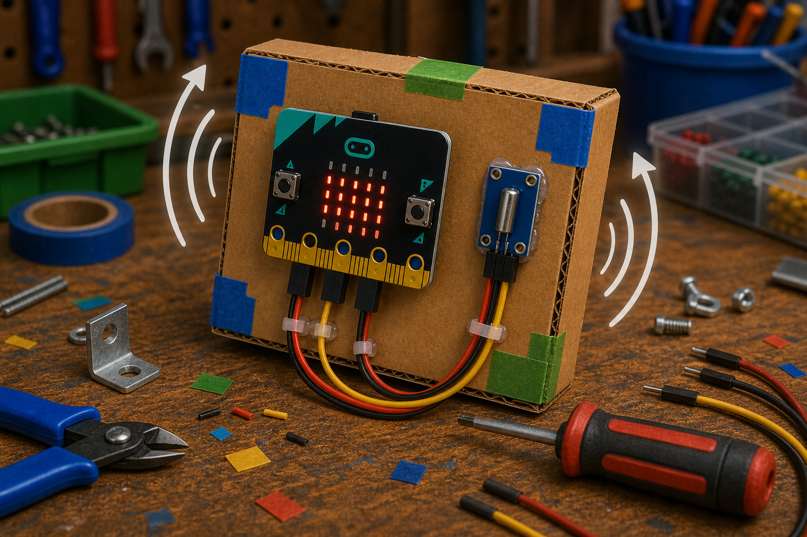
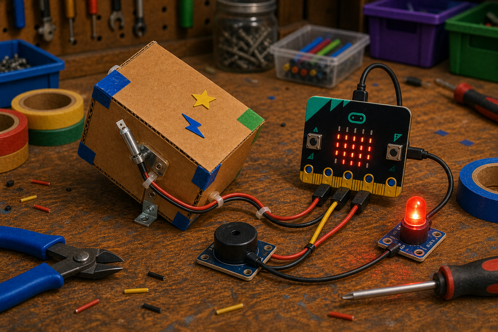

Shake to wake
DetectTilt changes
→
DecideIt has been moved
→
DoWake up the display
A tilt switch is a small switch that turns on or off when it is tipped.
Inside is usually a tiny ball that rolls to make or break the connection.
With a micro:bit, you read it on a pin, just like a button.


from microbit import *
pin0.set_pull(pin0.PULL_UP)
while True:
if pin0.read_digital() == 0:
display.show(Image.ANGRY)pins.setPull(DigitalPin.P0, PinPullMode.PullUp)
basic.forever(function () {
if (pins.digitalReadPin(DigitalPin.P0) == 0) {
basic.showIcon(IconNames.Angry)
}
})